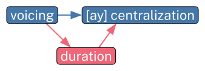
") #set text(size: 2em) ">Speech Rate and Causal Inference in Sound Change
Josef Fruehwald
University of Kentucky
The Open Question
Could some of our language change results, especially those involving centralization (back vowel fronting, the Low Back Merger Shift, American Raising) be biased by the fact younger people talk faster? (Kendall 2009, 2013, 2023)
The Upshot
Yes, both conceptually and empirically (in some case studies), the generational effect appears to be biased in this way.
We can get less biased generational change estimates if we include average vowel duration by speaker (not token duration!) in our models.
We should start thinking about Causal Inference to avoid potential pitfalls like this.
Causal Inference
Correlation does not imply causation.
But… would you really care to listen to me yammer about quantitative *~*associations*~* that you shouldn’t1 interpret causally in any way?
Causal Inference
By pre-specifying a causal model, we can identify potential confounds, and adjust for them.
Backdoor causal path
Statistical Adjustment
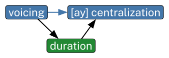
") #set text(size: 2em) ">Vowel Quality DAG
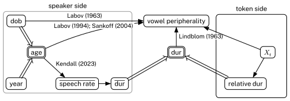
arate": text(size: 10pt)[Kendall (2023)], "dur->vq": box(fill:white, inset: 2pt)[#text(size: 10pt)[Lindblom (19">Vowel Quality DAG
Effects in the PNC
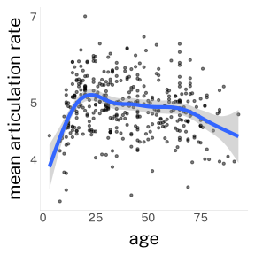
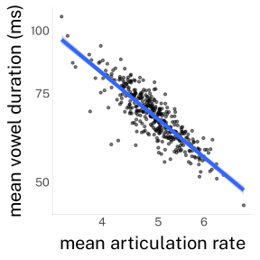
Demonstration by Simulation
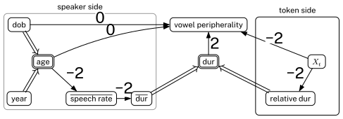
vq": box(fill:white)[#text(size:2em)[0]], "age->arate": box(fill:white)[#text(size:2em)[-2]], "dob->vq": bo">Demonstration by Simulation
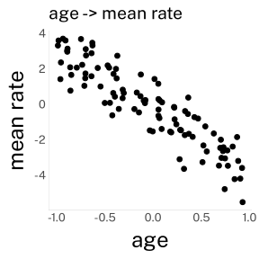
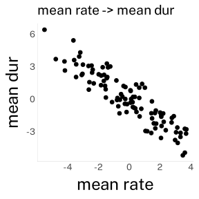
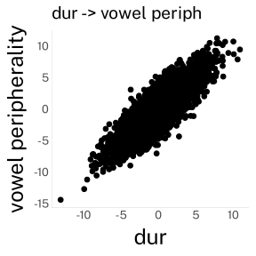
Demonstration by Simulation
I simulated 100 data sets this way.
The models I summarize next were all fit to the same 100 simulated data sets.
Age & Rate Backdoor
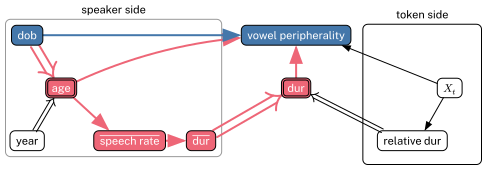
Age Backdoor
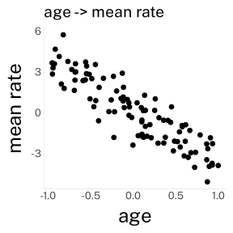
Closing the Age Backdoor

Closing the Age Backdoor
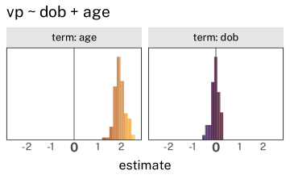
Closing the speech rate backdoor?
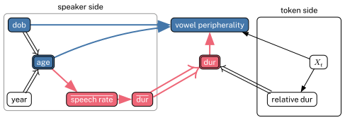
Closing the speech rate backdoor?
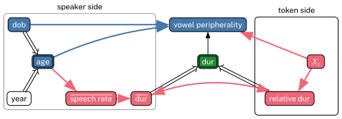
Closing the speech rate backdoor?

Closing the speech rate backdoor
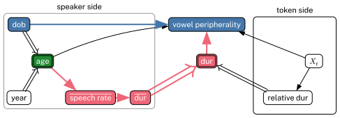
Closing the speech rate backdoor
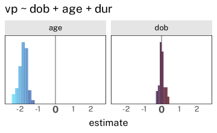
More Backdoors?

A centralizing change: American Raising in Philadelphia
Data extracted from the Philadelphia Neighborhood Corpus using new-fave.
Nearey normalized with
{tidynorm}.Filtered to just white speakers’ pre-voiceless /ay/ tokens
| gender | speakers | median tokens/speaker | total tokens | dob range |
|---|---|---|---|---|
| men | 146 | 41.5 | 8,846 | 1889 to 1998 |
| women | 182 | 42.0 | 12,002 | 1888 to 1996 |
All models fit with
{brms}with random intercepts by speaker and word.Interactions with gender were included for DOB, and age when it was included.
A centralizing change: American Raising in Philadelphia
As a centralizing change, the speech rate back door could lead to overestimating the DOB effect.
American Raising Results
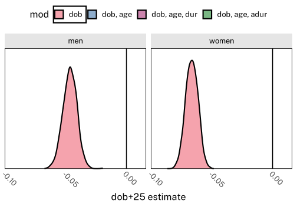


American Raising Results
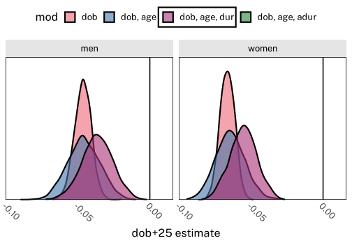
A peripheralizing change: /ey/ Raising in Philadelphia
Data extracted from the Philadelphia Neighborhood Corpus using new-fave.
Nearey normalized with
{tidynorm}.Filtered to just white speakers’ pre-consonantal /ey/.
| gender | speakers | median tokens/speaker | total tokens | dob range |
|---|---|---|---|---|
| men | 146 | 62 | 12,071 | 1889 to 1998 |
| women | 182 | 66 | 15,276 | 1888 to 1996 |
All models fit with
{brms}with random intercepts by speaker and word.Interactions with gender were included for DOB, and age when it was included.
A peripheralizing change: /ey/ Raising in Philadelphia
As a peripheralizing change, the speech rate back door could lead us to underestimating the DOB effect.
/ey/ Raising Results

/ey/ Raising Results
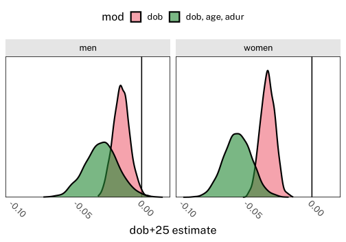
Conclusions
It would be a good idea to include average vowel duration by speaker in our statistical models of language change.
We should probably start laying out our causal models more explicitly, since not doing so can lead us to both over- and underestimate effects of interest.
References
Kendall, Tyler. 2009. Speech Rate, Pause and Linguistic Variation: An Examination Through the Sociolinguistic Archive and Analysis Project.
Kendall, Tyler. 2013. Speech Rate, Pause and Sociolinguistic Variation. Palgrave Macmillan UK. https://doi.org/10.1057/9781137291448.
Kendall, Tyler. 2023. “Sociophonetics and Speech Rate and Pause.” In The Routledge Handbook of Sociophonetics, 1st ed. Routledge. https://doi.org/10.4324/9781003034636-4.
Labov, William. 1963. “The Social Motivation of a Sound Change.” Word 19 (3): 273–309. https://doi.org/10.1080/00437956.1963.11659799.
Labov, William. 1994. Principles of Linguistic Change. Volume 1: Internal Factors. Blackwell.
Labov, William, and Ingrid Rosenfelder. 2011. New Tools and Methods for Very Large Scale Measurements of Very Large Corpora.
Labov, William, Ingrid Rosenfelder, and Josef Fruehwald. 2013. “One Hundred Years of Sound Change in Philadelphia: Linear Incrementaion, Reversal, and Reanalysis.” Language 89 (1): 30–65. https://doi.org/10.1353/lan.2013.0015.
Lindblom, B. 1963. “Spectrographic Study of Vowel Reduction.” The Journal of the Acoustical Society of America 35 (11): 1773–81. https://doi.org/10.1121/1.1918816.
Pearl, Judea. 2022. Causality: Models, Reasoning, and Inference. Second edition, reprinted with corrections. Cambridge University Press.
Pearl, Judea, Madelyn Glymour, and Nicholas P. Jewell. 2016. Causal Inference in Statistics: A Primer. John Wiley & Sons.
Sankoff, Gillian. 2004. “Adolescents, Young Adults, and the Critical Period: Two Case Studies from ‘Seven up’.” In Sociolinguistic Variation: Critical Reflections, edited by Carmen Fought. Oxford University Press.
Textor, Johannes, Benito Van Der Zander, Mark S. Gilthorpe, Maciej Liśkiewicz, and George T. H. Ellison. 2017. “Robust Causal Inference Using Directed Acyclic Graphs: The r Package ‘Dagitty’.” International Journal of Epidemiology, January, dyw341. https://doi.org/10.1093/ije/dyw341.